Compare results
Ten everyday prompts, each run four ways: free ChatGPT, free ChatGPT with Think, ChatGPT Pro/Business on high thinking (all without the plugin), and the Kenya Real Images plugin.
What we found
- Free ChatGPT, with or without Think, adds invented signs and slogans in 9 of 10 images, Kenyan flags in 6, and landmarks such as KICC where they don't belong. Think makes images more detailed, not more realistic.
- ChatGPT Pro/Business on high thinking is much more realistic and sometimes beats the plugin on everyday scenes (see 1). It still invents names and slogans, adds flags, and goes glossy for fashion and business prompts.
- Kenya Real Images avoided invented text, flags, landmarks and charity framing in all 10 tests, and gave free users results close to the best paid tier. Its weak spot: it can make simple scenes too plain.
Method: each prompt was typed exactly as shown, once per account, in a new chat, with no follow-ups. Plugin images were made in Codex with the plugin installed. One image per prompt and setting, so results vary from run to run. Tested 12 November 2026.
1. A photo of my grandmother cooking chapati in her kitchen in Nyeri.
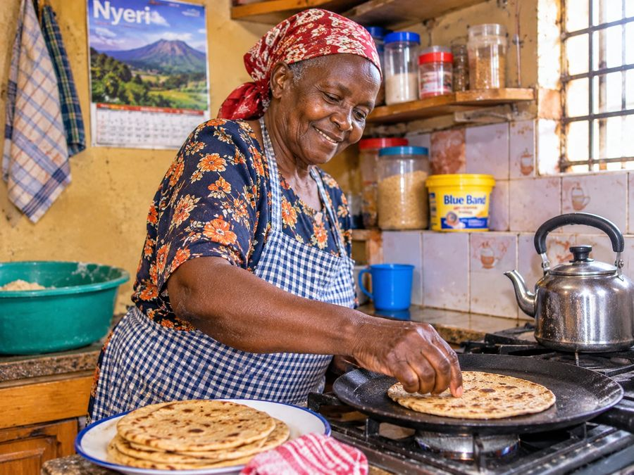
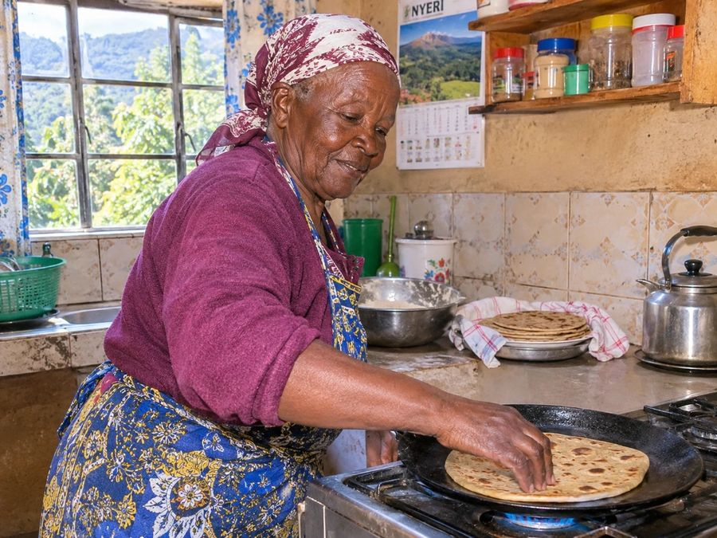
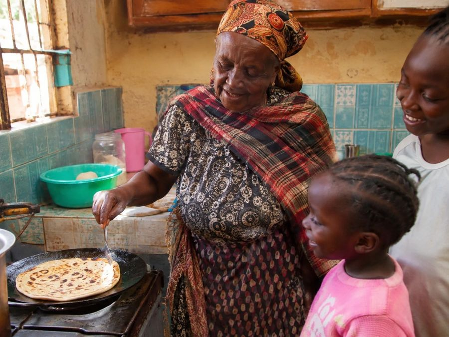
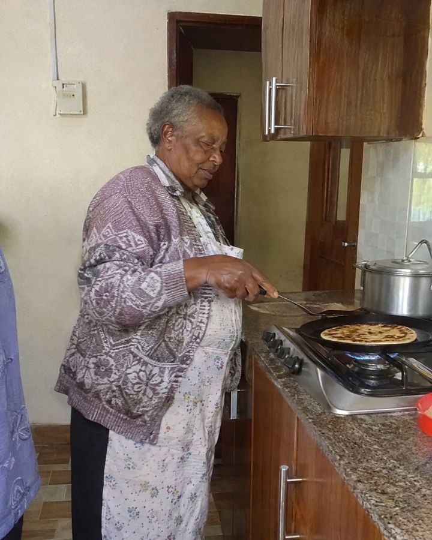
Free and Think add a "Nyeri" calendar and a branded margarine tin. Pro/Business is warm and candid, with grandchildren watching. Here the plugin's version is the weakest: it's taken from too far away and someone is cut off at the left edge.
2. A photo for my salon's Instagram: a stylist braiding a client's hair in a small salon in Eastleigh.
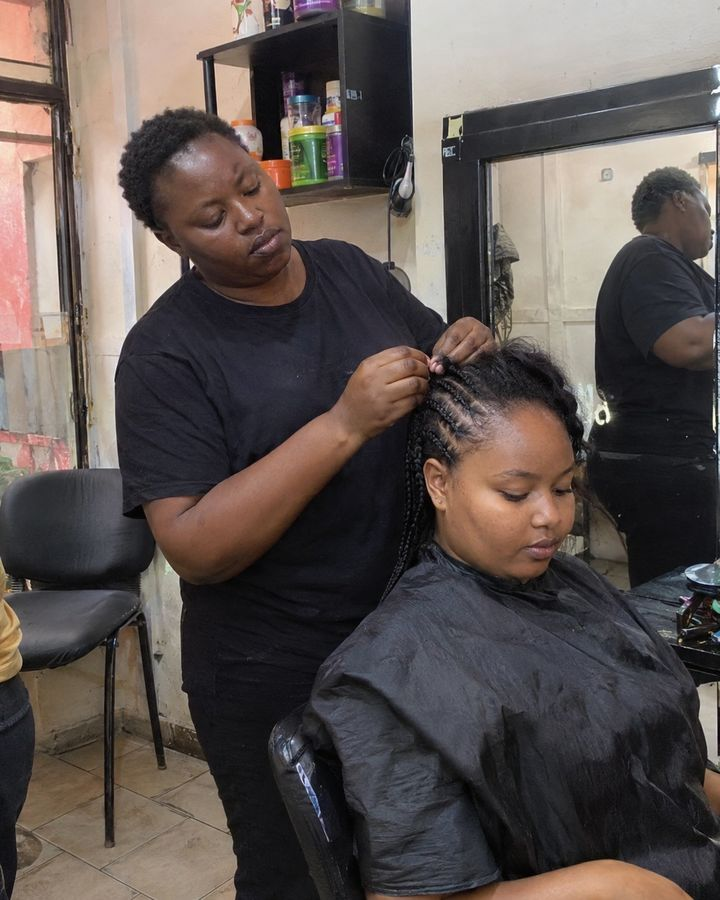
Every ChatGPT version invents a salon name, logo and price list. The plugin shows a working salon with no made-up branding, ready for your own.
3. A classroom in a public primary school in Machakos, the teacher helping a pupil at her desk.
Free and Think add slogan posters, a flag and a county crest. Pro/Business is very believable, with a real Kiswahili lesson on the board. The plugin is close to Pro/Business without needing a paid plan.
4. A Sunday church service in Kisumu, the choir singing and the congregation standing.
Free and Think invent a diocese banner and have everyone singing to the camera. Pro/Business and the plugin both show the service from the pews, the way a member would see it.
5. An image for our NGO report about clean water in rural Kenya.
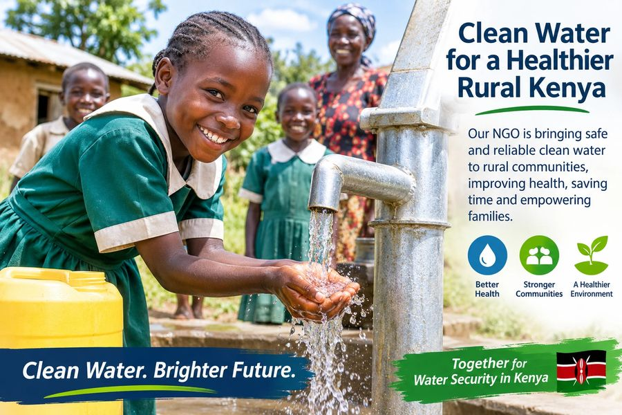
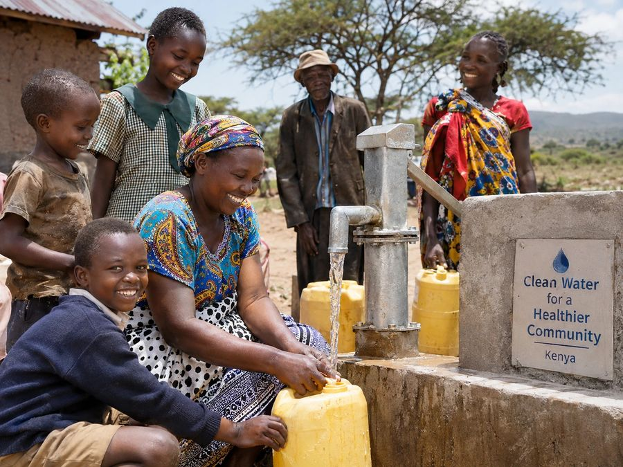
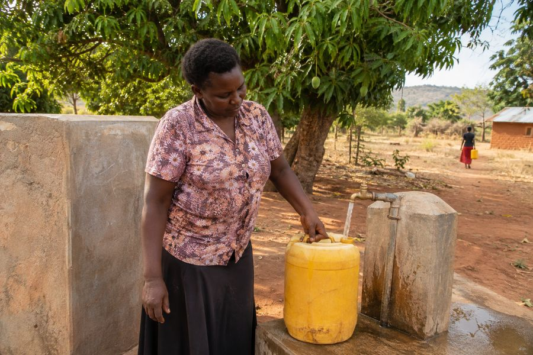
All three ChatGPT versions fall back on charity-poster framing: smiling children at a tap, invented NGO slogans, and in Think a whole poster with text. The plugin shows an adult fetching water, with no slogans.
6. A fashion photo shoot of a young woman in an Ankara outfit on a Nairobi street.
Every ChatGPT version adds KICC and an invented city sign, with a glossy model pose. The plugin gives a relaxed outfit photo of an ordinary woman. Some people will prefer the glossy look; the plugin aims for a real one.
7. Ultra-realistic 8K cinematic photo of a diverse team of young African tech founders in a modern Nairobi startup offic…
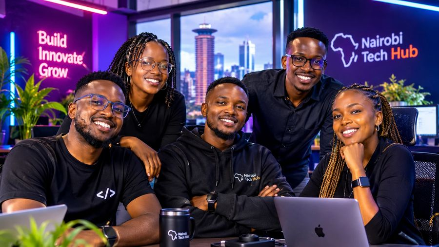
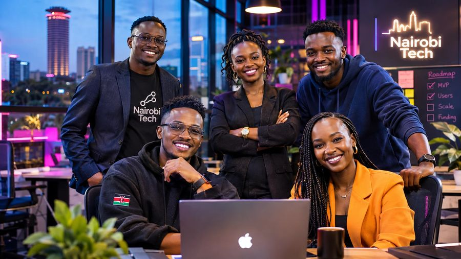
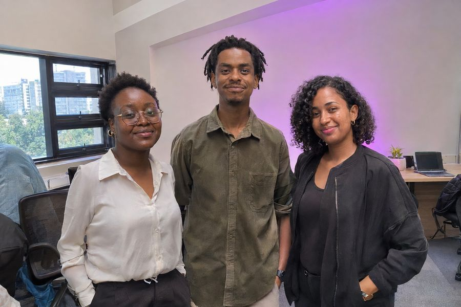
Every ChatGPT version follows the prompt word for word: neon, KICC, an invented "Nairobi Tech" brand, everyone grinning at the camera. The plugin tones down the AI wording, though the team still faces the camera.
8. Picha ya wasee wakiangalia mechi ya Harambee Stars kwa local, wakishangilia goal.
Free and Think fill the scene with flags, banners, face paint and "KENYA" on every shirt. Pro/Business and the plugin both understood the Sheng and showed a real local.
9. A school athletics day in Eldoret, girls racing on a grass track.
Free and Think add an invented banner and a flag. Pro/Business looks like a real sports day but writes a garbled school name. The plugin shows the race with no invented text.
10. A doctor talking to an elderly patient at a clinic in Mombasa.
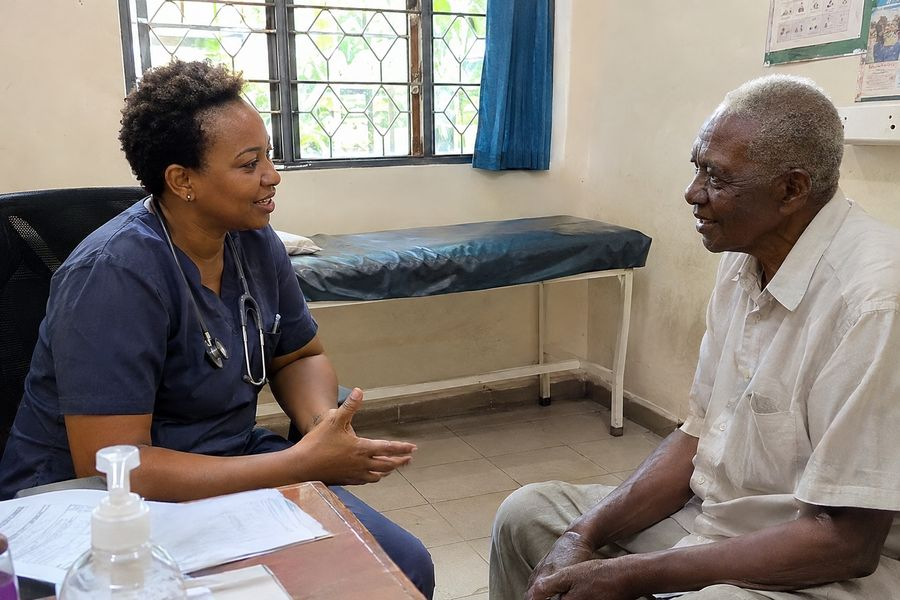
Free and Think add a county health poster and Fort Jesus or palm trees in the window. Pro/Business is believable but puts a made-up name on the doctor's coat. The plugin shows a plain consulting room.